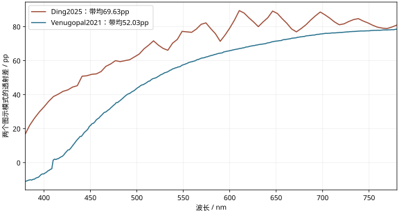
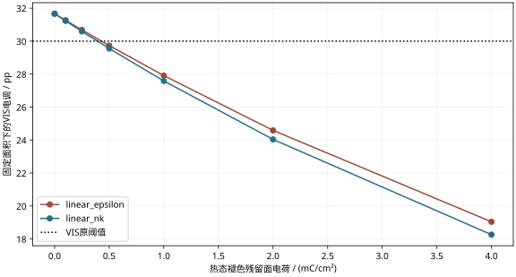
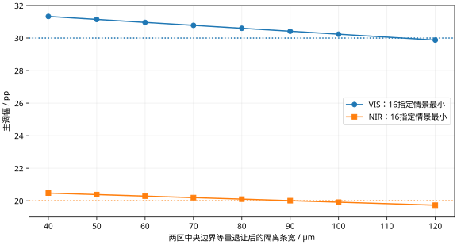

2026-11-06 · 仅题二 · 三并行与lead独立核对
新实物模式幅度跨过旧门槛，四态与完整工艺仍待闭合
本轮改变了材料取舍，但没有宣布原题完成。三个研究分支已分别给出新原图取谱、共同电荷四态推导、遮板与薄基底工艺预算。新Ding2025模式差值是有竞争力的线索；其状态／电压绑定与薄基底迁移尚不明确。旧LiNiO模型和新NiO/LiNbO₃实物严格分开。
沿用探索口径：VIS380–780nm、NIR780–2500nm，波长等权透射率带均绝对差，另一变量两个端点取较小值。pp为百分点；原题没有给数值串扰容差。面积混合、材料迁移和荷电路径均为下文明示假设。
1 真实调幅：用整器件原图筛选，而非摘要峰值
Ding等2025（DOI10.1039/D5EE02750K）的作者机构原图Figure2d，红Bright warming与紫Dark cooling的差值为69.6301pp。已校正零刻度y789；旧run01误用底框y797，冻结保留并被取代。像素诊断不是置信区间，也不覆盖曲线电压、温度、入射侧和参考归一方式的歧义。Figure2f照片2V/−0.5V不能自动绑定三条模式谱。论文摘要峰值92%不能代替此积分。

全VIS积分与单波长调幅不同。Venugopal2021整器件Figure5a仅约52.03pp；没有用Figure3单电极替代整器件。
温度不变的EC近似下，面积必要条件为 0.30/a + 0.20/b < 1−g。当前TC局部38.0651pp、隔离2%要求EC幅>65.9944pp；Ding中央取谱有面积EC43.9641–46.3861%，低像素情景则无交集。与已筛到的条件TC39.3086pp组合时，低像素情景仍有EC46.4957–48.0822%交集，允许总非活性面积<3.5548%。这是跨样品、无额外EC温漂的幅度诊断，不是同器件四态。
不需要靠新增背面减反膜才能满足这项幅度诊断：只用单前盖层的既有候选，VO₂79nm／Al₂O₃375.188nm，条件局部TC39.2859pp；Ding低像素情景在2%隔离下仍有EC46.4957–48.0522%交集，总非活性面积须<3.5253%。79nm来自源膜70±9nm区间，恒定n/k及迁移至mica仍是假设，并非同制程样品实测。新取谱如仅依赖图示模式而缺n/k，不组装虚构TMM四态。完整主文／SI403或404返回已记录，未冒充成功取得。
三线须在同一预算内相容：上述单前盖层／低像素情景的3.5253%非活性面积，在2mm直条分割孔径中对应总宽<70.506µm，不能继承旧化学端点方案80µm条带的16/16结果。2%隔离、EC有效面积47.2308%时，两标量的平衡预算约30.4743／20.3162pp；这是跨样品条件预算，不是完整四态谱或联合公差证明。
2 共同电压：先识别同一可逆电荷与热态褪色
旧LiNiO/LiTaO₃模型引入两电极共同转移Li电荷：源表头WO₃32.736、LiNiO32.85mC/cm²，以较小值守恒后，条件主幅31.6627／20.8901pp。表头是化学端点标签，不是当前溅射器件实测容量。介电常数线性与n/k线性是两条未测得的荷电路径。
上述均为固定其他变量的单变量界限，不能组合成独立误差盒。两条路径均提示：热态充分褪色可能比继续深着色更关键。新NiO/LiNbO₃器件不得继承这些电荷值。

图示是机制诊断，不是Q(V,T)实测。固定44%电控面积，其他荷电端点锁定。
电控热响应也可能帮助温调。两温都采用不同Li电荷时，n/k路径出现30.2278／20.1294pp的人工过线证例，ε路径却无共同面积。前者伴VIS温串8.9435pp、NIR电串11.1787pp；两种结果一并保留。它们证明端点不能识别真实四态，不构成新增实际候选。
决定性的输入：同一对外电压、明确作用时间和复位历史下的两温完整器件光谱；或可逆q(V,T,t,history)、同电荷光谱映射及两温安全电压窗交集。电压脉冲加电荷截止可以作为明确的动态协议，但断路后两态同为0V只能称记忆态，不能标成两个静态电压；终端电流须扣除副反应与漏电。
3 工艺：把遮板注册、弓高和外围实体计入
旧方案8µm云母，TC为VO₂70/AlOx400nm；EC为ITO200/LiNiO150/LiTaO₃200/WO₃480/ITO200/AlOx380nm。建议先剥至最终厚度并由边缘机械夹持，先完成热膜及保护，再做EC，不追加500°C ITO后退火。孔径内9实体，EC最大7层、TC3层；同层ITO延伸接点不增加成膜实体，但永久引线、侧壁／接点边封仍未闭合。

旧化学端点与η=1条件。各层误差为既有相关组；不是制造良率。两侧各退让20µm形成80µm条时最小30.6013／20.0991pp；100µm条时NIR最小19.9126pp。
注册误差10µm、遮板离面50µm、束角半宽20°的指定诊断需总隔离96.397µm，最坏NIR19.9462pp。这些是设定值而非设备实测。模糊有膜边缘不能当作无功能裸云母；未知边缘的最坏包络比清洁隔离条更苛刻。局部单位应力层合条也显示膜弯曲不能免费忽略，未将其冒充真实膜形状或强度。
新Ding堆栈单独核对：glass/ITO150/NiO850/LiNbO₃60/WO₃700/ITO120nm，五膜合1880nm。各膜厚通过，但玻璃厚度未知。改为8µm云母并分区是新提案：无EC盖层8实体／EC6层；加380nm盖层9实体／EC7层。替换支持或新增盖层后不能继承原图光谱。原始DPRW制备段未取得；新闻中磁控溅射WO₃属于另一SDRCR，不作完整工艺证明。
联合判断与下一判别
旧材料组合严格A已失败，标称B仍未认证；新Ding整机A/B均未认证，不能把旧ITO数据直接当成其同制程测量。原题逐层10–10000nm、层数≤20、图案特征>1µm保持；总几何厚10.26µm并非逐层越界。未推进题一，不新增先制样、寿命或全天气验收。
下一有效动作先确认Ding完整模式身份与制备参数，再取得对应热态共同驱动谱；在此之前保留为材料线索。若原始数据改变幅度或保护损失，回代上述共同面积与遮板预算，不能只优化中央面积。
复算与来源
lead独立从原始像素、保存四态谱、六组隔离谱与单前盖层温控谱重新积分；最大数值差2.17e-13。这是算术核验，不认证材料或制造。三条线各自的独立求解器／力矩控制保留在JSON。数值输入、源码快照、研究笔记与便携复算入口一并提供。完整文献仅列来源与已有哈希；便携适配版从记录恢复全文哈希，不能据此声称离线验证了文献全文字节。
主要原始入口：Ding作者机构原图；Venugopal2021；Wang2021热态电化学；Ekström2023 VO₂/mica。未取得的全文和匹配数据在笔记逐项标明。
完整数据与边界便携输入与复算包